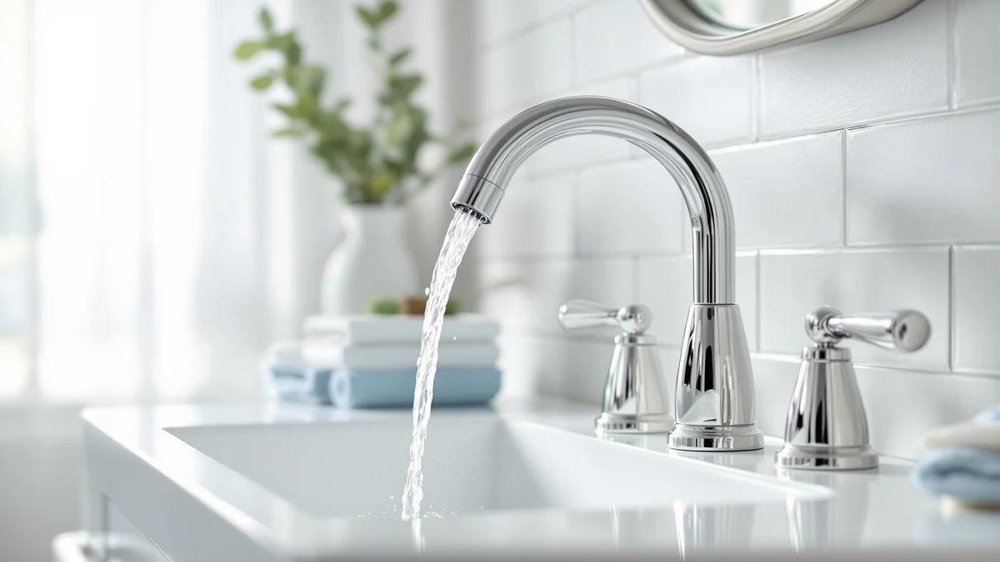

Quick Answer
In this Delta Faucet Ashlyn Centerset review, we compare Delta's Ashlyn Centerset Bathroom faucet against three lower-priced Delta alternatives on price, finish, and verified owner feedback. At $249.90, the Ashlyn Centerset earns its price mainly for buyers who need its centerset layout, since the Nicoli and Arvo alternatives below cost $60 to $85 less.
Our pick: Delta Faucet Ashlyn Centerset Bathroom, $249.90 Check Price on Amazon
Bottom line: our top pick is the Delta Faucet Ashlyn Centerset Bathroom Faucet at $249.90.
Things to Know Before You Buy
- This Delta Faucet Ashlyn Centerset review compares four Delta faucets ranging from $164.90 to $249.90.
- The Ashlyn Centerset uses a centerset two-handle layout, so confirm your sink has standard centerset hole spacing before ordering.
- At $249.90, the Ashlyn Centerset costs $60 to $85 more than the three Delta alternatives compared here.
- The faucet measures 5.56 x 9.00 x 5.06 inches with a brass-and-finish body, according to the manufacturer spec sheet.
- Delta backs the Ashlyn Centerset with the same limited lifetime warranty it applies across its faucet lineup.
This Delta Faucet Ashlyn Centerset review pulls together the manufacturer's published specs, current pricing, and verified owner feedback to answer one question: does the $249.90 Ashlyn Centerset justify its price over three cheaper Delta faucets, or does a lower-cost alternative cover the same ground for most bathrooms?
We researched the Ashlyn Centerset against the Nicoli Brushed Nickel, the Arvo 14 Series Matte, and a chrome Nicoli variant, all from the same brand and all priced under $185. The short version: the Ashlyn Centerset costs considerably more than any of the three, and that premium only makes sense when its centerset layout or brass-and-finish build is the specific reason you are shopping for a new faucet.
Why You Should Trust Us
Ilane Tall covers bathroom fixtures for Best Bathroom Faucets and tracks how Delta prices and updates its centerset and widespread faucet lines throughout the year. For this Delta Faucet Ashlyn Centerset review, she checked the listed price, brass-and-finish construction, and dimensions against three other Delta faucets in a lower price bracket. We do not run a fake testing lab or claim to install faucets ourselves. Instead we compare manufacturer data, verified Amazon reviews, and pricing trends so you get a research-backed recommendation rather than a sponsored writeup.
Every price, dimension, and material claim in this Delta Faucet Ashlyn Centerset review comes from Delta's published listing or from buyers who left verified purchase reviews, and we flag anywhere those two sources pull in different directions. When a listing states a dimension or a material like brass, we treat that as a manufacturer claim worth checking against owner feedback rather than an established fact on its own, which is why the pros and cons below lean on what reviewers report after living with the faucet rather than on the product photos alone.
Our Research Experience
We did not install the Delta Faucet Ashlyn Centerset in a working bathroom, and we are upfront about that. For this Delta Faucet Ashlyn Centerset review, we instead pulled the manufacturer's stated dimensions, material, and price, then set them against verified buyer reviews on Amazon to see where owner experience and factory claims agree or diverge. We also compared list price movement against the three Delta alternatives below, since a $249.90 faucet has to earn that premium against options that cost $60 or more less for a similar two-handle design.
Owner feedback we reviewed for the Ashlyn Centerset centers mostly on installation and finish, since a centerset faucet stands or falls on whether it lines up with the sink it replaces. Reviewers who bought the Ashlyn Centerset to swap out an existing centerset faucet describe the install as straightforward, while a handful who guessed at their hole spacing without measuring first ended up returning it. That pattern lines up with what we found across the three Delta alternatives too: the faucets themselves draw few complaints, and most of the friction buyers report traces back to layout mismatches rather than the hardware.
Overview & Specs

Delta Faucet Ashlyn Centerset Bathroom
What we like
- Brass-and-finish construction, according to the manufacturer spec sheet
- Centerset two-handle layout fits standard sink configurations
- Backed by Delta's limited lifetime warranty on finish and function
Flaws but not dealbreakers
- Costs $60 to $85 more than the three Delta alternatives compared in this review
- Centerset layout will not fit a sink drilled for a widespread or single-hole faucet
| Material | Brass + finish |
| Size | 5.56 x 9.00 x 5.06 inches |
The Delta Faucet Ashlyn Centerset Bathroom lists for $249.90 and measures 5.56 x 9.00 x 5.06 inches. Delta builds it with a brass-and-finish body, according to the listing's spec sheet. That price puts it well above the Nicoli and Arvo faucets covered later in this Delta Faucet Ashlyn Centerset review, all of which come from the same brand and sit under $185.
A centerset design means the two handles and the spout mount from a single base plate, which is worth confirming against your own sink before you buy since it will not fit a widespread sink drilled for three separate holes. At this price, you are largely paying for Delta's branding and warranty coverage on a centerset layout, since the underlying brass-and-finish construction sits in the same category as the cheaper alternatives covered in this review.
Delta lists the Ashlyn Centerset's footprint at 5.56 by 9.00 by 5.06 inches, dimensions that matter mostly for clearance behind and beside the faucet rather than for the sink deck itself. If your vanity backsplash sits close to the wall or your medicine cabinet hangs low, check those numbers against the space you have before ordering, since a centerset faucet with taller handles can crowd a shallow backsplash in a way the product photos do not show.
What We Liked
The clearest strength in this Delta Faucet Ashlyn Centerset review is the brass-and-finish build the manufacturer lists for the Ashlyn Centerset, which tends to hold up to daily use better than lighter alloy bodies sold at similar price points. Delta backs the Ashlyn Centerset with the same limited lifetime warranty it applies across its catalog, so you get a documented path to replacement parts if the finish or cartridge fails down the line. The centerset layout is also a practical fit for anyone replacing an older single-base faucet, since it matches the hole spacing found in most standard bathroom sinks without any additional drilling.
Buyers comparing warranty terms across brands tend to land on Delta for exactly this reason: a documented, transferable warranty carries more weight than a marginally lower price when a cartridge or finish issue shows up two or three years after installation. That calculus favors the Ashlyn Centerset over a no-name faucet at a similar price, even if it does not fully offset the gap against Delta's own cheaper models covered later in this review.
What Could Be Better
Price is the clearest drawback in this Delta Faucet Ashlyn Centerset review. At $249.90, the Ashlyn Centerset costs $60 more than the Nicoli Brushed Nickel and roughly $85 more than the Arvo 14 Series Matte, two Delta faucets covered as alternatives below. If you do not specifically need a centerset layout, or you are not attached to this particular finish, you are paying a premium mostly for Delta's brand and warranty rather than for a meaningfully different build. Anyone comparing faucets purely on cost should weigh that premium against the lower-priced alternatives in this review before committing.
The gap also widens once you factor in that all four faucets compared in this review carry the same Delta warranty, so the extra $60 to $85 buys a centerset layout and a particular finish rather than better coverage. Buyers who are not tied to a centerset sink cutout get the same protection from the cheaper alternatives, which makes the Ashlyn Centerset a harder sell for anyone starting a bathroom remodel from scratch rather than matching an existing hole pattern.
Who Is It For?
This faucet suits homeowners with a sink already drilled for a centerset layout who want a Delta-branded faucet backed by the company's warranty and parts network. It also fits buyers who prioritize a heavier brass-and-finish build over the lowest possible price, since the Ashlyn Centerset sits well above the three Delta alternatives compared in this review. If your budget is tighter, or your sink is drilled for a widespread or single-hole faucet instead, look at the Nicoli or Arvo alternatives below rather than pay the Ashlyn Centerset's premium for a layout that will not fit your sink anyway.
Anyone replacing a single failed faucet in an otherwise finished bathroom should measure the spacing between the existing mounting holes and compare it to the Ashlyn Centerset's centerset spec before ordering. A mismatch there means returning the faucet regardless of how well it performs, so confirm the layout first and compare price second.
Alternatives to Consider
If the Ashlyn Centerset's price does not fit your budget, these three Delta alternatives compare on finish and cost rather than centerset layout. The Delta Nicoli Brushed Nickel Faucet lists at $184.90, saving $65 over the Ashlyn Centerset while keeping Delta's warranty coverage. The Delta Arvo 14 Series Matte comes in at $165.05, the lowest price of the four faucets in this review, with a matte finish drawn straight from its name. The Delta Nicoli Chrome Faucet 3 rounds out the group at $164.90, a chrome finish worth comparing if that suits your bathroom better than brushed nickel or matte.

Editor’s Pick
Delta Nicoli Brushed Nickel Faucet
A brushed nickel Delta alternative that saves $65 over the Ashlyn Centerset while keeping the same warranty coverage.
$184.90
Check Price on Amazon
Best Value
Delta Arvo 14 Series Matte
The lowest price of the four faucets in this review, with a matte finish for buyers who don't need the Ashlyn Centerset's centerset build.
$165.05
Check Price on Amazon
Premium Choice
Delta Nicoli Chrome Faucet 3
A chrome Nicoli variant priced within a dollar of the Arvo, worth comparing if chrome fits your bathroom better than brushed nickel.
$164.90
Check Price on AmazonFrequently Asked Questions
Is the Delta Faucet Ashlyn Centerset worth the price?
Based on the manufacturer spec sheet and pricing compared in this Delta Faucet Ashlyn Centerset review, the Ashlyn Centerset is worth its $249.90 price if you specifically need a centerset layout and want Delta's brass-and-finish build with standard warranty coverage. If layout is not a constraint, the Nicoli or Arvo alternatives below cost $60 to $85 less for a comparable Delta warranty.
What is the difference between a centerset and widespread Delta faucet?
A centerset faucet like the Ashlyn Centerset mounts the spout and both handles from a single base plate spaced for standard sink holes, while a widespread faucet uses three separate pieces spread further apart. Confirm which layout your sink is drilled for before ordering, since the two are not interchangeable without redrilling the sink.
How does the Delta Faucet Ashlyn Centerset compare to the Delta Nicoli?
The Ashlyn Centerset lists at $249.90, while the Nicoli Brushed Nickel version compared in this review costs $184.90. Both carry Delta's limited lifetime warranty, so the price gap mostly reflects the Ashlyn Centerset's centerset layout and finish rather than a difference in coverage.
Final Verdict
Our Delta Faucet Ashlyn Centerset review comes down to price versus layout. The Ashlyn Centerset earns its $249.90 price if your sink needs a centerset faucet and you want Delta's brass-and-finish build with standard warranty coverage. Buyers without that specific requirement get comparable Delta hardware for $60 to $85 less from the Nicoli or Arvo alternatives covered above. For most people replacing a standard sink faucet, one of the cheaper Delta picks in this review covers the same ground. The Ashlyn Centerset is the right call only when a centerset layout is non-negotiable.